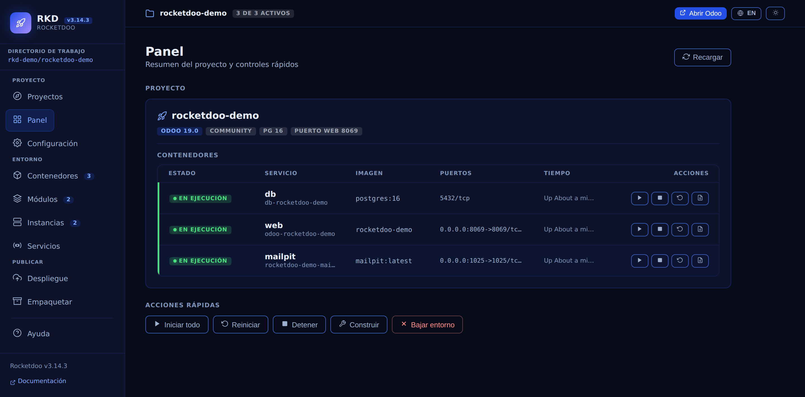
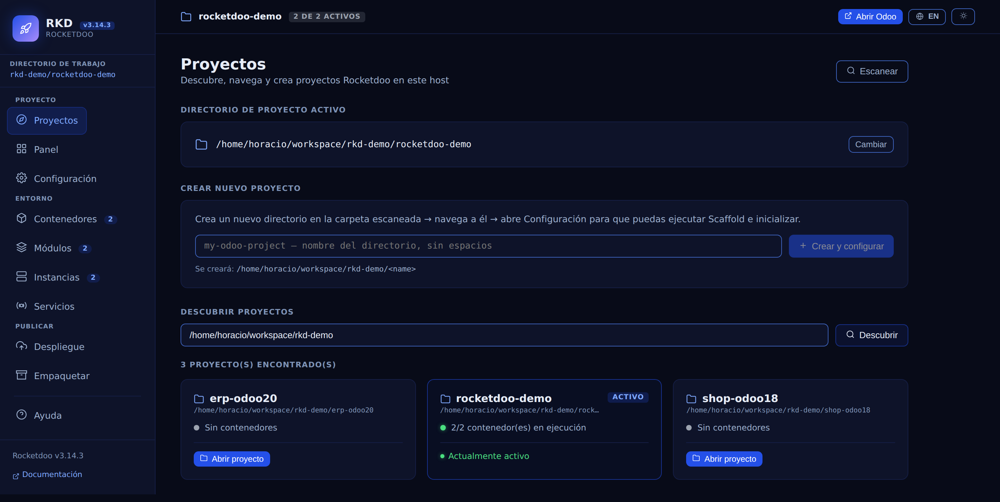
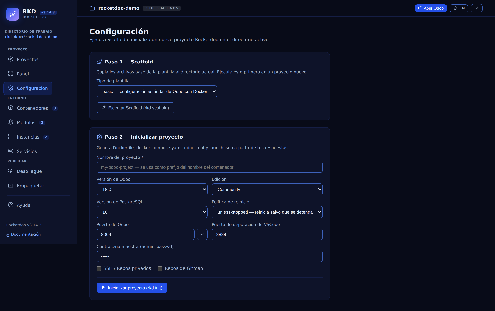
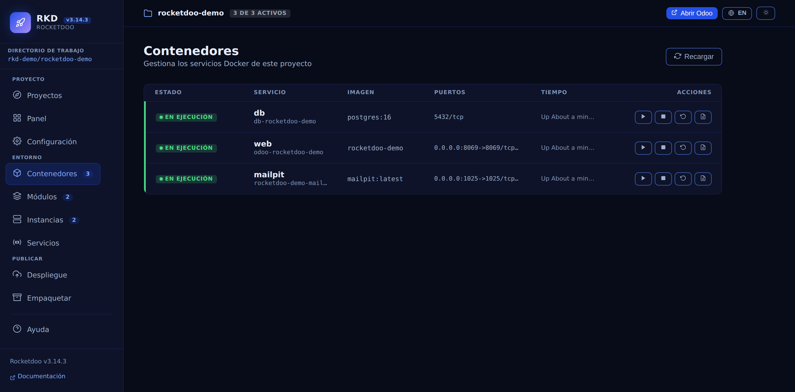
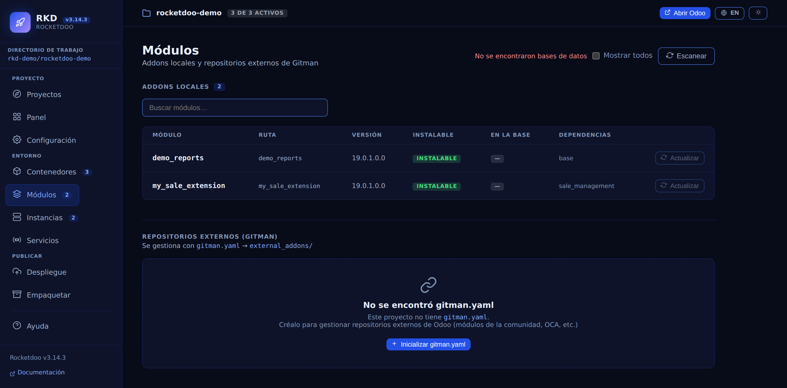
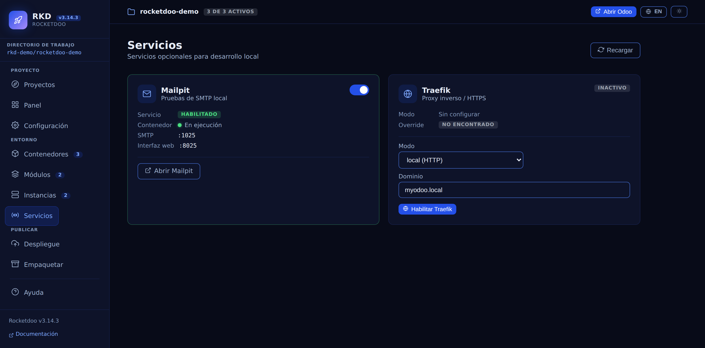
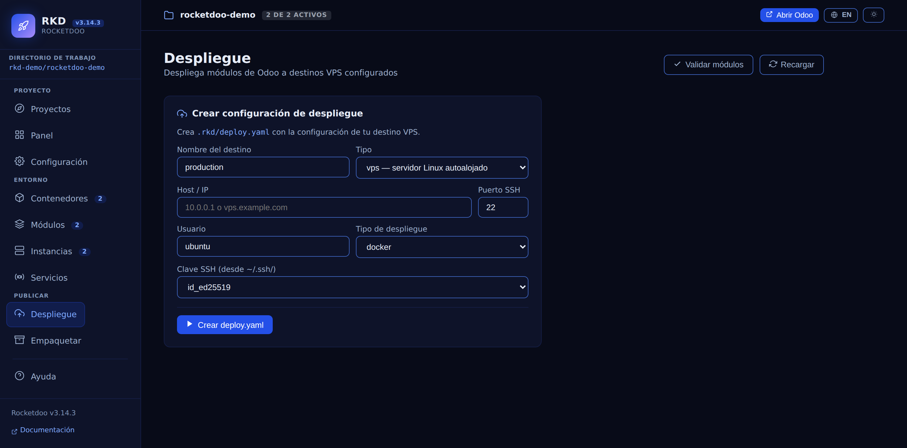
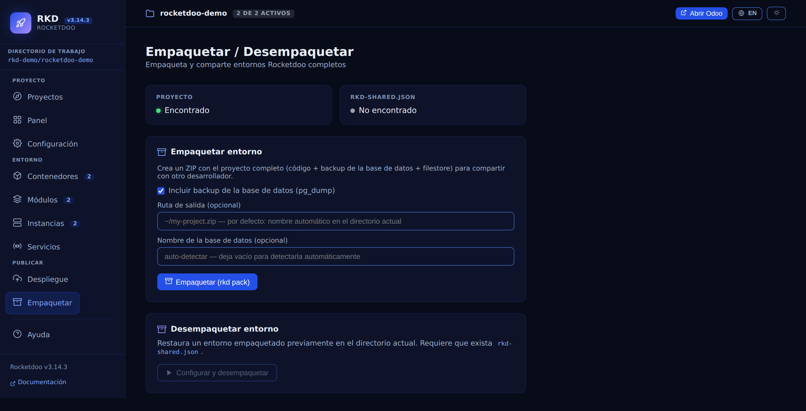
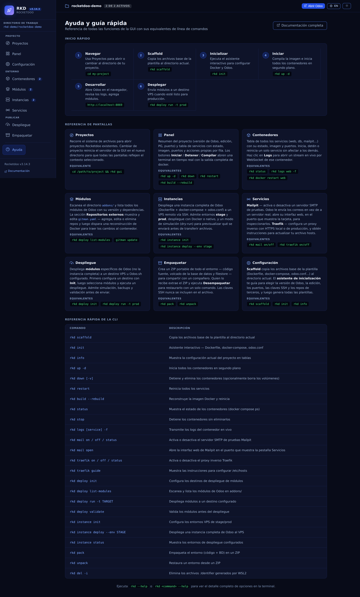

Interfaz Gráfica (GUI)
Rocketdoo incluye una Interfaz Gráfica web que te permite gestionar todo tu entorno de desarrollo Odoo desde el navegador — sin escribir comandos Docker.
Rediseñada en la 3.5, afilada hasta la 3.14. Una barra superior fija que siempre dice en qué proyecto estás, navegación lateral agrupada, una pantalla Proyectos, un tema claro que cumple contraste WCAG AA, y un selector español/inglés. Desde entonces: un selector de base de origen en Instancias (3.14), los puertos reales de Mailpit en Servicios (3.9.1), un selector de claves SSH y la cronología del propio deployer en Despliegue (3.14.2 y 3.14.3), y una interfaz que ya no se congela mientras Docker trabaja (3.14.3). Además, desde la 3.4 la API exige un token de sesión — mirá El token de sesión, porque cambia la forma de abrir la GUI.
Iniciar la GUI
Lanzá la GUI desde el directorio de tu proyecto:
Rocketdoo imprime la URL que tenés que abrir. Lleva un token de sesión, y sin él la GUI no te muestra más que un cartel pidiéndote uno:
Open this URL (it carries the session token):
http://127.0.0.1:8070/?token=B0aITaQp0PaUQLodowmXCFGafXJtabZZQr-twSnxNIs
Presioná Ctrl+C en la terminal para detener el servidor.
Opciones
| Opción | Descripción | Valor por defecto |
|---|---|---|
--port |
Puerto en el que corre el servidor de la GUI | 8070 |
--host |
Dirección de host a usar | 127.0.0.1 |
--open |
Abrir el navegador automáticamente en esa URL exacta | false |
--cwd |
Directorio del proyecto (si es distinto al actual) | directorio actual |
Ejemplos:
rkd gui --port 9090 # Puerto personalizado
rkd gui --open # Abre el navegador en la URL con el token
rkd gui --cwd /ruta/al/proyecto # Directorio de proyecto específico
El token de sesión
Cada rkd gui genera un token nuevo que vive solo en la memoria del servidor. La API (/api/* y
/ws/*) rechaza cualquier pedido que no lo lleve: 401 por HTTP, y en WebSocket cierra la
conexión. Tres consecuencias que conviene saber:
- Entrar a
http://localhost:8070a secas ya no te da una GUI funcionando. La página en sí carga —/,/healthy el SPA están exentos —, pero se rechaza todo pedido de datos, así que muestra Se requiere un token de sesión en vez de fallar en silencio. Usá la URL impresa, o--open. Desde la 3.8 ese aviso no es un callejón sin salida: trae un campo para pegar el token y un botón Usar token, que es lo que te hace falta cuando el aviso de puertos de VSCode te manda a la dirección pelada. La pestaña del navegador recuerda el último token que funcionó, mientras siga abierta. - Reiniciar
rkd guiinvalida el token anterior. Las pestañas viejas dejan de funcionar: abrí la URL nueva. - El token viaja como parámetro de la URL, así que puede quedar en el historial del navegador. El modelo de amenazas completo está en SECURITY.md.
Recorrido de la interfaz

Hay tres partes siempre en pantalla:
- La barra superior dice cuál es el proyecto activo y muestra una pastilla con cuántos
contenedores están corriendo (
3 de 3 activos), además de Abrir Odoo y los botones de idioma y tema. La ruta completa del proyecto está en el tooltip del nombre. - La barra lateral agrupa las diez pantallas en Proyecto (Proyectos, Panel, Configuración), Entorno (Contenedores, Módulos, Instancias, Servicios) y Publicar (Despliegue, Empaquetar), con un contador al lado de Contenedores, Módulos e Instancias. Ayuda queda aparte, al pie. La pastilla Directorio de trabajo es además el atajo de vuelta a Proyectos.
- El área principal muestra la pantalla que elegiste.
Idioma y tema
Dos botones en la barra superior:
- ES / EN cambia toda la interfaz entre español e inglés. Sin una elección guardada, arranca
según el idioma del navegador. Lo que la GUI sólo reproduce queda intacto a propósito en cualquier
idioma: los logs de Docker, los nombres y versiones de los addons, los nombres de contenedor e
imagen, y el estado crudo de
docker compose ps(Up 3 hours). - El botón de sol/luna cambia entre el tema claro y el oscuro. Sin una elección guardada, sigue al de tu sistema operativo; una vez que lo tocás, tu elección persiste entre reinicios. Las capturas de esta página usan el tema oscuro.
Las pantallas
Proyectos

Encontrá proyectos Rocketdoo y moverte entre ellos sin reiniciar el servidor.
- Directorio de proyecto activo — sobre el que actúan todas las demás pantallas; Cambiar elige otro.
- Crear nuevo proyecto — crea un directorio y te lleva directo a Configuración.
- Descubrir proyectos — escanea una carpeta recursivamente y lista cada proyecto Rocketdoo que encuentra, con su cantidad de contenedores y un botón Abrir proyecto — el que ya estás usando dice Actualmente activo en su lugar.
Panel
El proyecto de un vistazo: versión de Odoo, edición, versión de PostgreSQL, puerto web y Gitman como pastillas compactas, después la tabla de servicios, y después las acciones rápidas (Iniciar todo, Reiniciar, Detener, Construir, Bajar).
La pantalla muestra una sola acción de relleno según el estado: Abrir Odoo en la barra superior si el contenedor de Odoo está corriendo, Iniciar todo en la pantalla misma si no lo está.
Configuración

El asistente de rkd scaffold y rkd init, desde el navegador: tipo de plantilla, nombre del
proyecto, versión de Odoo, edición, versión de PostgreSQL, política de reinicio, puertos de Odoo y
de depuración de VSCode, master password, repos privados por SSH y repos de Gitman. Dos botones
ejecutan los pasos — Ejecutar Scaffold (rkd scaffold) e Inicializar proyecto (rkd init).
Este formulario llega hasta Odoo 19. La lista de versiones de la GUI es fija y todavía no ofrece Odoo 20, que la CLI soporta desde la 3.7. Para crear un proyecto Odoo 20 usá la terminal —
rkd init --profile odoo20-ce— y después administralo desde la GUI como siempre. Todo lo demás de esta pantalla se comporta igual que el asistente de la CLI.
Contenedores

La misma tabla de servicios del Panel. Cada fila tiene sus propios botones de iniciar, detener, reiniciar y logs; los logs se transmiten en vivo por WebSocket.
A anchos angostos (alrededor de 1100px) la tabla necesita scroll horizontal para llegar a la columna de Acciones.
Módulos

Todo lo de los addons en una pantalla:
- Addons locales — cada módulo bajo
addons/, con su ruta, versión, si es instalable y, eligiendo una base en el selector BD, si está instalado en esa base. El botón Actualizar por módulo ejecuta la actualización con log en vivo. - También encuentra los módulos anidados:
oca/web_responsiveen la captura vive en un subdirectorio, y desde la 3.5 Rocketdoo agrega ese subdirectorio aladdons_pathde Odoo para que sea realmente alcanzable. - Repositorios externos (Gitman) — leé y editá
gitman.yamly disparás el rebuild de Docker.
Instancias

Una tarjeta por entorno configurado en .rkd/instance.yaml (stage, prod) con host, dominio, versión
de Odoo, tipo de despliegue y ruta remota, más Desplegar y la casilla Simulación (dry run).
Los parámetros de rendimiento no están en esta pantalla. Los workers y los límites de memoria y de tiempo viven bajo
resourcesen.rkd/instance.yaml; se configuran conrkd instance inito editando el archivo. Desde la 3.15, guardar un entorno acá conserva el bloqueresourcesexistente en vez de borrarlo. Ver Afinar Odoo por entorno.Nuevo en la 3.14. Cada tarjeta lleva además un selector Base de datos de origen:
Ninguna — base nueva de cero (recomendado), o alguna de tus bases locales para restaurar en ese entorno. Elegir una la guarda en el acto; la confirmación llega después, al apretar Desplegar, como un cartel que te hace escribir el nombre del entorno. Tildar Simulación (dry run) saltea ese cartel, porque una simulación no restaura nada. Los avisos que levanta el pre-flight vuelven como notificaciones en esta pantalla. Ver Sembrar un entorno con una base local.
Servicios

Los servicios locales opcionales, juntos:
- Mailpit — el interruptor lo activa o desactiva, y la tarjeta informa el estado del servicio, el
contenedor, el puerto SMTP y el de la interfaz web, con un botón para abrirla. Desde la 3.9.1 esos
son los puertos realmente publicados, no un
1025/8025hardcodeado, y el link para abrir aparece sólo cuando hay algo que abrir. - Traefik — el modo actual y si existe el archivo de override, con un selector de modo (local HTTP / producción HTTPS), el dominio y Habilitar Traefik.
Despliegue

Desplegá módulos a los targets configurados en .rkd/deploy.yaml: una tarjeta por destino, cada una
con Desplegar y Simulación (dry run), más Validar módulos arriba — el equivalente en la
GUI de rkd deploy run. Cuando todavía no hay deploy.yaml, la pantalla muestra en cambio un
formulario Crear configuración de despliegue, que elige la clave SSH de una lista con las claves
de ~/.ssh/ (3.14.2) en vez de pedirte que tipees una ruta.
Arreglado en la 3.14.3. Los dos botones fallaban siempre:
Desplegarllamaba a un método que no existía y unexceptancho convertía la falla en un200optimista, yValidar módulosmostraba una tarjeta roja de Validation errors con la lista vacía para todo proyecto, incluido uno sin un solo error. Ahora el despliegue pasa por el mismo punto de entrada que la CLI —validación, backup, chequeo previo y rollback— y el panel muestra la cronología del propio deployer debajo del veredicto.
Empaquetar

Empaquetá el entorno para compartirlo (Empaquetar (rkd pack)) eligiendo si incluís el backup de la base, la ruta de salida y el nombre de la base, o restaurá uno que te pasaron con Configurar y desempaquetar.
Ayuda

Una referencia de cada función de la GUI al lado de su equivalente en la CLI, para que pasar de una a la otra sea buscar un dato y no adivinarlo.
Notas
- La GUI maneja tu Docker local a través de la CLI — Docker tiene que estar corriendo para que las acciones sobre contenedores funcionen.
- El streaming de logs usa WebSockets; mantené la pestaña abierta mientras seguís los logs.
- No hace falta acceso a internet: todo corre localmente.
- Los cambios hechos desde la GUI (Mailpit, Traefik, Gitman) quedan escritos en los archivos de tu
proyecto en el momento (
docker-compose.yaml,odoo.conf,gitman.yaml,.rkd/traefik.yaml). - Desde la 3.2 la API sólo acepta pedidos del navegador que vengan del propio origen de la GUI —
el host y el puerto en los que arrancó, así que
--porty--hostsiguen funcionando. Las versiones anteriores aceptaban cualquier origen: mientrasrkd guiestaba corriendo, cualquier página que visitaras podía listar tu sistema de archivos y detener tus contenedores. Atarse a127.0.0.1nunca protegió de eso, porque el pedido sale de tu propio navegador. Si usás la GUI, actualizá. rkd gui --host 0.0.0.0no es la configuración recomendada. Expuesta así, el token pasa a ser la única barrera real y viaja sin cifrar por HTTP plano.